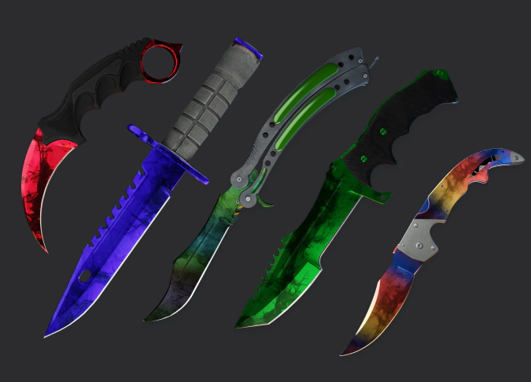
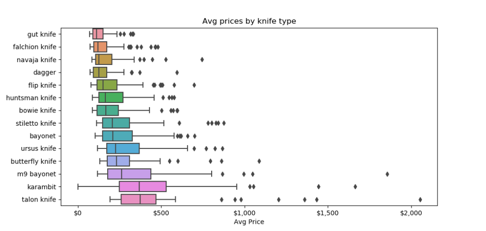
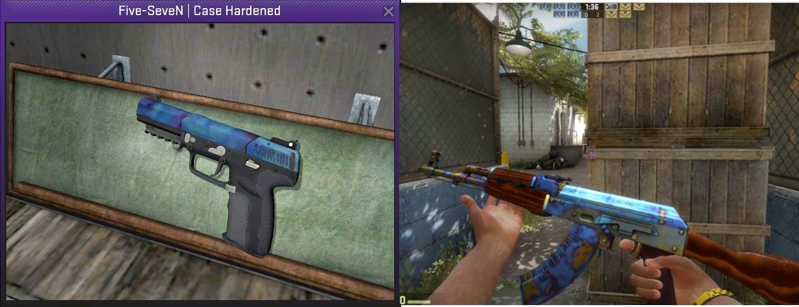
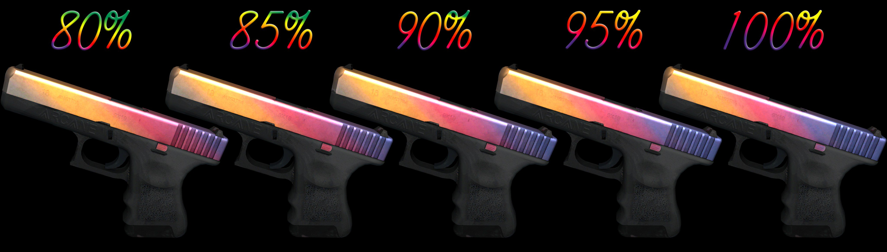
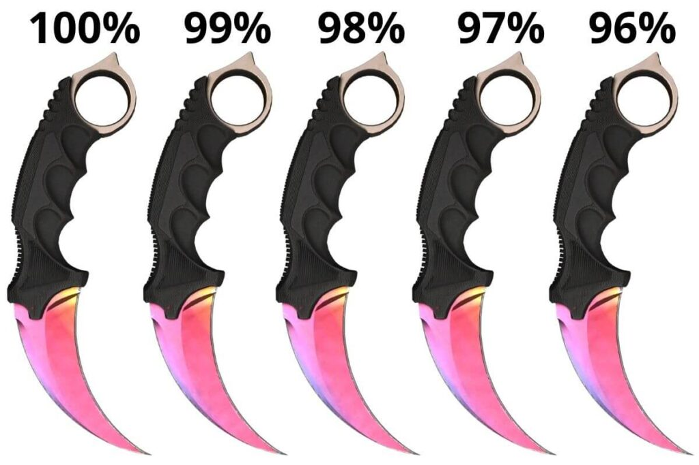
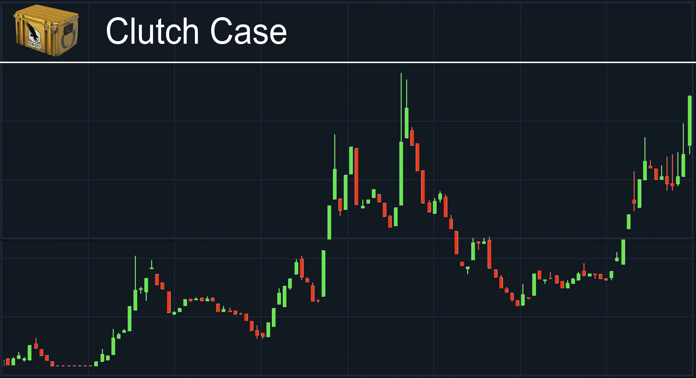

Premium Knife Collections
Knife skins represent the pinnacle of CS:GO collectibles, often commanding the highest prices in the market. Their rarity, visual appeal, and status symbol nature make them prized possessions among players and investors alike.
Price Distribution by Knife Type
The chart above shows the price distribution across different knife types. Karambit and Butterfly knives command the highest average prices, while gut knives typically sell for the lowest amounts. Outliers (represented by dots) indicate rare pattern variants that fetch significantly higher prices.
Popular Knife Types
- Karambit
- Distinctive curved blade inspired by tiger claws
- Among the most sought-after knife designs
- Popular patterns: Fade, Doppler, Crimson Web
- Butterfly Knife
- Known for unique flipping animation
- High demand due to visual appeal
- Popular patterns: Fade, Marble Fade, Slaughter
- M9 Bayonet
- Large blade with tactical design
- Distinctive serrated back edge
- Popular patterns: Crimson Web, Doppler Phase 2, Lore
- Classic Knife
- Original Counter-Strike knife design
- Nostalgic value for long-time players
- Popular patterns: Fade, Slaughter, Crimson Web
Knife Pattern Value Guide
Case Hardened knives feature randomly generated blue, gold, and purple patterns. The "blue gem" pattern shown above is extremely rare and can increase a knife's value by 5-20x over market price. Pattern index numbers are used by collectors to identify specific valuable variations.
Fade Percentage Guide
Fade skins feature a gradient blend of colors. Higher fade percentages (90%+) include more purple/blue coloration at the tip and command premium prices. This principle applies to all fade knives, with 100% fades being the most sought after by collectors.
Top Knife Finishes
Fade
The Fade finish features a gradient blend of colors, typically yellow at the handle transitioning to pink and purple at the tip. Full fades with high purple percentage command premium prices.
Doppler
Doppler finishes feature swirling patterns of color on a dark base. Special phases like Sapphire (blue), Ruby (red), and Black Pearl (dark iridescent) are extremely rare and valuable.

Crimson Web
Featuring a deep red base with black web patterns, these knives vary in value based on the number and placement of web formations. Factory New versions are extremely rare.
Float Value Comparison for Knives
Float values dramatically affect both appearance and price. Factory New knives with values close to 0.00 can command significant premiums, especially for finishes like Crimson Web and Ultraviolet where wear is highly visible.
Investment Outlook
Knife skins generally retain value well over time, especially limited collections or those no longer dropping. When investing in knife skins, consider:
- Rarity Factor
- Case drop rate (typically 0.25-0.3%)
- Specific pattern rarity (Fade percentage, Doppler phase)
- Wear rating (Factory New is rarest)
- Aesthetic Appeal
- Vibrant colors typically command higher prices
- Clean, distinguishable patterns are preferred
- Animation quality affects desirability
- Market Trends
- Professional player usage can drive demand
- Discontinued cases increase scarcity
- New knife releases may temporarily affect market
Case Price History
Case prices influence knife value over time. As cases become more expensive (due to discontinued drops), the unboxing cost increases, driving up the market value of knives from those cases. The Clutch Case shown above demonstrates how case prices can rise over time.